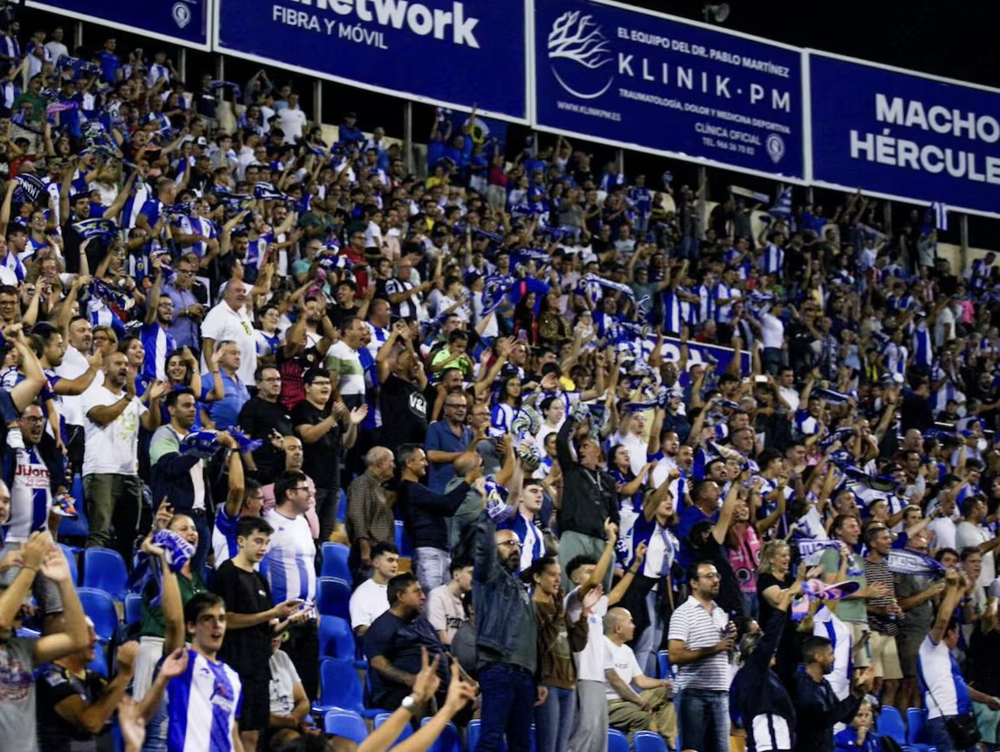

El Hércules ya conoce su sanción tras el lanzamiento de objetos
Tras el 1-3 anotado desde los once metros por parte del cuadro catalán hubo una lluvia de botellas desde el fondo del Rico Pérez, teniendo el colegiado que interrumpir el choque durante quince minutos, haciéndolo constar en el acto al término del partido
